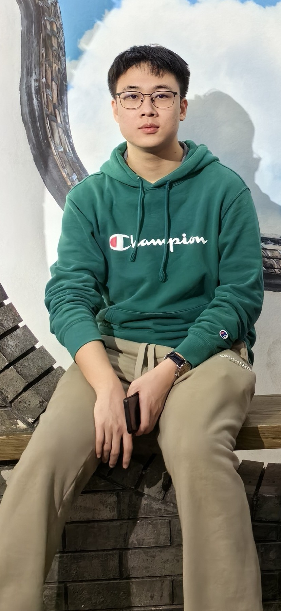
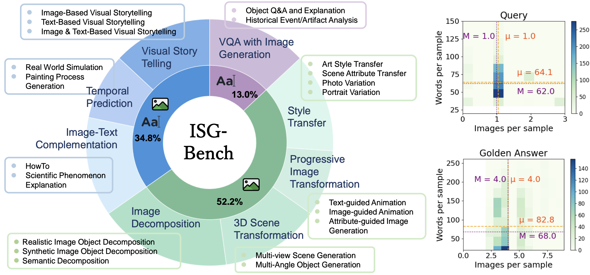

|
Shu Pu
I'm an undergraduate student at HuaZhong University of Science and Technology in WuHan. I'm interested in Any2Any generation, Controllable Generation, Physical Perception and 3D AIGC, Computer Graphics and CUDA programming.
Email /
CV /
Bio /
Scholar /
Github
|

|
Research
I'm interested in multimodal understanding and generation and computer vision. Most of my research is about Any2Any Generation.
|
|

|
ISGBench: Interleaved Scene Graph for Interleaved Text-and-Image Generation Assessment
Shu Pu*, Dongping Chen* , Ruoxi Chen*, Zhaoyi Liu*, Yanru Wu*, Caixi Chen*, Benlin Liu, Yue Huang, Yao Wan, Pan Zhou, Ranjay Krishna
arXiv, 2024
pdf /
arXiv /
GitHub
A comprehensive evaluation framework for interleaved text-and-image generation.
|
Thanks to this Jon Barron's website template to create such a clean and neat personal website. The source code is open-source. Do not scrape the HTML from this page itself, as it includes analytics tags that you do not want on your own website — use the github code instead. Also, consider using Leonid Keselman's Jekyll fork of this page.
|
|
{kind=link}